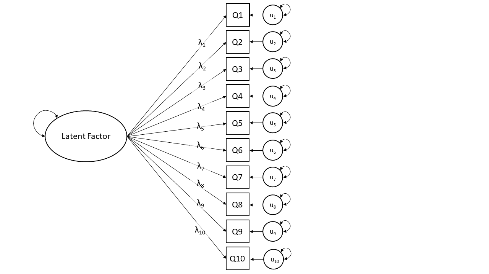
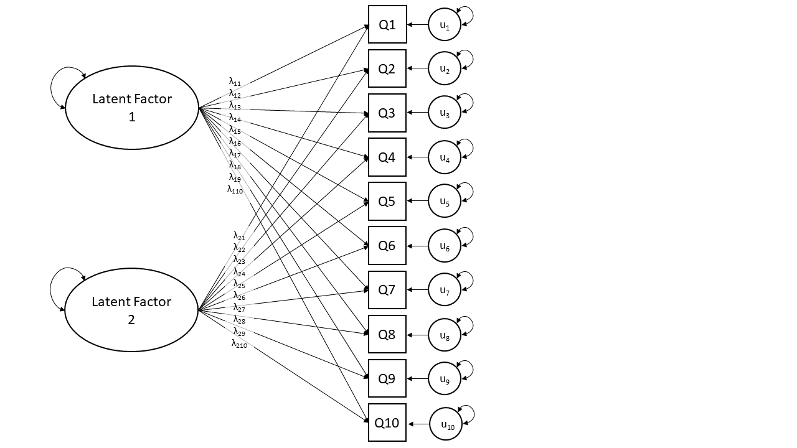

cor(mydata)Exploratory Factor Analysis (EFA)
Exploratory Factor Analysis
The “Exploratory” in Exploratory Factor Analysis reflects that we are not wanting to test any specific hypothesis about the structure of the dimensions underlying our variables. Instead, we are interested in discovery of that structure.
Consider extending our example of tiredness we worked with in Dimensionality of Data to a situation in which we ask people to rate their agreement with 10 statements:
- I feel physically exhausted even after doing minor tasks.
- My muscles feel strong and full of energy today.
- Mentally, I feel completely drained and empty.
- I feel motivated and eager to start new activities.
- I have to fight to keep my eyes open during the day.
- I feel alert and wide awake when sitting quietly.
- If I closed my eyes right now, I would fall asleep instantly.
- I feel a strong urge to take a nap.
- My reaction times feel incredibly slow.
- I find myself staring blankly into space without thinking.
Initially you might be happy to think “these questions all ask about just one thing - being tired”, but then you might on reflection feel that some subset of the questions are slightly more similar to one another than to others. Questions 1 to 4 are a little more focused on “energy levels”, and Questions 5 to 8 are asking a bit more about a propensity to sleep. Questions 9 and 10 are less clear, but seem to be about a sort of cognitive ‘sluggishness’?
Exploratory Factor Analysis (EFA) can help us to understand if our set of 10 questions is “unidimensional” (they all just measure a single construct of tiredness), or whether there are actually two (or more) “subdimensions” to the questionnaire.
The focus of EFA, therefore, will be comparing models of different numbers of underlying dimensions. Comparing models will partly be a matter of comparing their numerical fit (how much variance do they explain etc), but it will also be a matter of comparing the theoretical fit — does grouping these 4 variables as a set make sense?
The technique of EFA will help us better understand a) what exactly it is that we have measured, and b) how we can create composite score(s) (i.e. can we give everybody just 1 score, or do we really need a number of scores - one for each dimension?)
Model based thinking
Something to highlight here is that EFA is a model-based approach to dimension reduction. This differs from something like PCA which is more like a transformation or ‘re-expression’ of \(p\) variables on to \(p\) dimensions (some of which we then discard).
At a very broad level, most of statistical modelling is of the form:
\[ \text{Outcome} = \text{Model} + \text{Error} \]
Typically with methods we have looked at before such as lm() and lmer(), the “outcome” was a vector of everybody’s values on an outcome variable, which we predict (or ‘model’) based on the values on a set of explanatory variables.
What changes when we do factor analysis is that our “outcome” is going to be a correlation matrix. The correlation matrix represents how the variables that we’ve collected are correlated with one another.
The “model” in an EFA is simply a number of “latent factors”. latent factors here are unobserved variables that we believe to be the cause of why our observed variables are related. They are defined in our model via their relationships with each of the observed variables.
Finally, the “error” part of an EFA captures that the model will be unable to perfectly predict the outcome (our correlation matrix). This error shows up in two ways: first, the model will rarely predict the exact correlations between items perfectly. Second, for each individual observed variable, there will always be unique variance - something specific to that question that doesn’t correlate with anything else. In EFA, both this imperfect fit and item uniqueness are considered “error”.
\[\begin{matrix} \text{relationships between} \\ \text{observed variables} \end{matrix} = \begin{matrix} \text{latent} \\ \text{factor(s)} \end{matrix} + \begin{matrix} \text{variance unique to} \\ \text{each observed variable} \end{matrix}\]
Rabbit Hole: EFA in Matrix Form
Let’s make this a bit more concrete. In the tiredness example above we have ten observed variables, so our correlation matrix would be 10x10: ten rows by ten columns.
To keep things reasonable and make it easier, we’ll look back at the example with just three observed variables (“Physical Fatigue”, “Mental Fatigue” and “Sleepiness”), meaning that we have a 3x3 correlation matrix:
M P S
M 1.00 0.60 0.75
P 0.60 1.00 0.77
S 0.75 0.77 1.00In our example with the 3x3 correlation matrix, let’s suppose we are going to model the associations between the observed variables using with just one latent factor.
In this model, we are saying that the reason that our three variables are correlated is because responses to each variable are driven by the same underlying factor (to varying extents). With 3 variables, it means our model is represented by 3 numbers, one for how each variable “loads” onto the factor.
We’re using the symbol \(\mathbf{\Lambda}\), which is a capital lambda, to denote those three numbers.
(If you’ve never encountered linear algebra before, don’t worry about how exactly the following maths happens. The equations are included for those who are interested—if you’re not interested, that’s OK. The maths is not essential for you to know.)
We multiply those three numbers \(\mathbf{\Lambda}\) by themselves in such a way that the outcome is a 3x3 matrix.1 This matrix is close but not quite identical to our observed correlation matrix. The difference between the model matrix and the correlation matrix is the uniqueness matrix, represented by \(\mathbf{\Psi}\), a capital psi (pronounced like “sigh”). The uniqueness matrix contains the “error”, the variance that’s unique to each observed item (whether because the item is different in some way than the others, or because there’s measurement error associated with that item, or both—examples of this coming up below).
\[ \begin{align} \color{red} \text{Outcome} &= \color{blue} \text{Model}\, +\, \color{magenta} \text{Error} \\ \quad \\ \color{red} \text{Correlation Matrix} &= \color{blue} \text{Factor Loadings}^2 \,+\, \color{magenta} \text{Uniqueness} \\ \quad \\ \color{red} \mathbf{\Sigma} &= \color{blue} \mathbf{\Lambda}\mathbf{\Lambda'} \,+\, \color{magenta} \mathbf{\Psi} \\ \quad \\ \color{red} \begin{bmatrix} 1 & 0.60 & 0.75 \\ 0.60 & 1 & 0.77 \\ 0.75 & 0.77 & 1 \\ \end{bmatrix} &= \color{blue} \begin{bmatrix} 0.764 \\ 0.783 \\ 0.980 \\ \end{bmatrix} \begin{bmatrix} 0.764 & 0.783 & 0.980 \\ \end{bmatrix} \,+\, \color{magenta} \begin{bmatrix} 0.42 & 0 & 0 \\ 0 & 0.39 & 0 \\ 0 & 0 & 0.04 \\ \end{bmatrix} \\ \quad \\ &= \color{blue} \begin{bmatrix} 0.58 & 0.260 & 0.75 \\ 0.60 & 0.61 & 0.77 \\ 0.75 & 0.77 & 0.96 \\ \end{bmatrix} \,+\, \color{magenta} \begin{bmatrix} 0.42 & 0 & 0 \\ 0 & 0.39 & 0 \\ 0 & 0 & 0.04 \\ \end{bmatrix} \\ \end{align} \]
EFA as a diagram
One way to think about the EFA model is to draw it in diagrammatic form, mapping the relationships between variables. There are conventions for these sort of diagrams:
- squares = variables we observe (often referred to as “items” in EFA)
- circles = variables we don’t observe (typically the “factors”)
- single-headed arrows = regression paths (pointed at outcome)
- double-headed arrows = correlation/covariance
EFA as a diagram, where we are suggesting there is just one latent factor, looks like Figure 1. We have each of our observed variables (or “items”), Q1 to Q10, and we are also positing that there is a thing that we don’t observe directly (the “latent factor” oval). The arrows in Figure 1 are indicating that people’s scores on Q1 to Q10 are caused by two things: first by their standing on the latent factor, and second by other stray causes unique to that question (the “u” circles for the errors). The double headed arrows attached to the latent factor, and to the errors, just represent that these have variance (i.e., some people are high on the latent factor, some people are low).

Note that the arrows from the latent factor to each item have different values. These are the “loadings”, and you might find it easier to just read the \(\lambda\)s as beta-weights (\(b\), or \(\beta\)), because that’s all they really are. The EFA model in Figure 1 can be represented as a set of regression equations: \[ \begin{align} Q1 &= \lambda_{1} \text{Factor} + u_{1} \\ Q2 &= \lambda_{2} \text{Factor} + u_{2} \\ &\ldots \\ &\ldots \\ \end{align} \] It is also worth noting that the diagram in Figure 1 doesn’t have arrows connecting the observed variables directly to one another. This model is a statement that the reason that Q1 and Q2 are correlated in the data is because they both measure the same latent factor. The goal of EFA is to explain the correlations between the items as being the result of some number of underlying latent factors.
With this in mind, the process of doing EFA is about comparing different solutions. It could be that 1 factor model in Figure 1 provides a good fit to the data, or we might consider a 2 factor model (Figure 2) to a) explain substantially more variance and b) provide a theoretically clearer picture with more well defined factors (e.g., allowing us to talk about two dimensions of “energy depletion” and “propensity for sleep” rather than just a single dimension of “tiredness”).

Rabbit Hole: common/specific and shared/unique variance.
Recall we might start with a set of variables all aiming to get at the construct of “tiredness”. Taking just one of our items, such as “Q8. I feel a strong urge to take a nap.”, think of all the reasons why people will respond differently to this question.
They will vary in their responses due to 1) their level of general tiredness (the thing we’re interested in), 2) their propensity for napping, that is separate from a general tiredness (e.g., they might be a person who hates taking naps!) and 3) measurement error (responses of “agree” and “strongly agree” are very inexact measurements here, and lots of stuff like the time of day this is asked probably influences responses a lot too!)
Factor analysis is concerned with capturing the first bit - the general construct. It does so by assuming that the variance shared across multiple items — the covariance (or correlation) — represents the construct.
So a way to think of the factor model is as trying to separate out common variance from unique variance. And the unique variance could be capturing true variability (like a propensity for napping), or just error.
\[ \begin{equation} var(\text{total}) = var(\text{common}) + var(\text{specific}) + var(\text{error}) \end{equation} \]
| common variance | variance shared across items | true and shared |
| specific variance | variance specific to an item that is not shared with any other items | true and unique |
| error variance | variance due to measurement error | not ‘true’, unique |
Summary
An EFA model aims to explain the correlations we observe between variables (items), through a set of mappings (“factor loadings”) from each item onto each of the factors that we tell the model to find.
It is an exploratory method with the goal of determining the number of factors (and their mappings) that “best explain” the correlations between observed items. This means that the process of doing EFA typically involves fitting multiple models for a range of possible numbers of factors, and then comparing and evaluating them with regards to which is the “best” explanation.
What makes a good factor solution?
Core to doing EFA is evaluating what makes one model better than another. Along with various numeric criteria that indicate the stability and utility of of the solution, a large part of the task is going to require human subjective judgement, and is concerned with whether a certain factor structure is “theoretically coherent” (i.e., based the wordings of each question etc).
1. How much variance is accounted for by a solution?
This is a good starting point as it shows us an overall metric of how much the factor(s) are actually capturing something that is meaningfully shared between the items.
More variance in the items explained by the solution is better, but more factors will generally explain more variance, so this should never be the only reason to prefer one model over another. Think “does the 5% additional variance explained enough to make this extra factor worthwhile?”.
There are no rules for how much variance explained is ‘enough’, or what amount of increased variance explained is ‘worthwhile’.
2. Do all factors load on 3+ items at a “salient” level?
“Salient” here is somewhat arbitrary, but convention is to require factor loadings to be \(>0.3\) or \(<-0.3\).
We want our factors to be meaningful things that don’t simply represent the same thing as a single variable. If a factor has only 1 item that loads very highly on to it, and all other item loadings are small, then that factor is really just capturing a very similar thing to the observed item. Likewise if a factor only had 2 items loading on to it, we may as well just use their mean.
3. Do all items have at least one loading at a salient level?
We want our solution to capture the full breadth of our measurement tool - i.e. all aspects of our construct. If we have a set of items we believe to all represent the construct (or some aspect of it), then we ideally want each item to be related to at least one factor.
Depending on our purpose, an item that doesn’t have a salient loading could point us to look at the item in more detail, and think about why it is doing something different. If we are developing a measurement tool then we may even decide that the item was badly worded, and we could drop it from the analysis and start over with the process on the subset of items.
4. Are there any highly complex items?
In an ideal world, each item will be clearly linked to one factor and not to others. If an item loads across multiple factors, then we say that item is “complex”.
This isn’t necessarily a problem per se, but it can make it much harder to define exactly what our factors represent.
5. Are there any impossible values?
- Fitting an EFA can result in a numerical solution that simply cannot exist. For instance, it might find a solution that has a factor loading that is greater than 1, or a communality (sum of squared factor loadings for that item) greater than 1. These are called “Heywood cases”, and they don’t make sense because a factor can’t explain >100% of the variance in an item.
6. Is the factor structure (items that load on to each factor) theoretically coherent?
- This is probably the biggest question, and is simply “does it make sense?”
- A first step here is to ask “can you give a name to each factor?”. It requires us looking at the item wordings carefully and considering how they are grouped in loadings on to each factor. We need to think about whether the groups of items make sense given what we know about their wordings and how people might be interpreting and responding to them, and about the construct we’re trying to measure. This is the fun bit!
Footnotes
In linear algebra terms, \(\mathbf{\Lambda}\) is a column vector and \(\mathbf{\Lambda'}\) is a row vector, and using matrix multiplication, their product \(\mathbf{\Lambda}\mathbf{\Lambda'}\) is a 3x3 matrix.↩︎